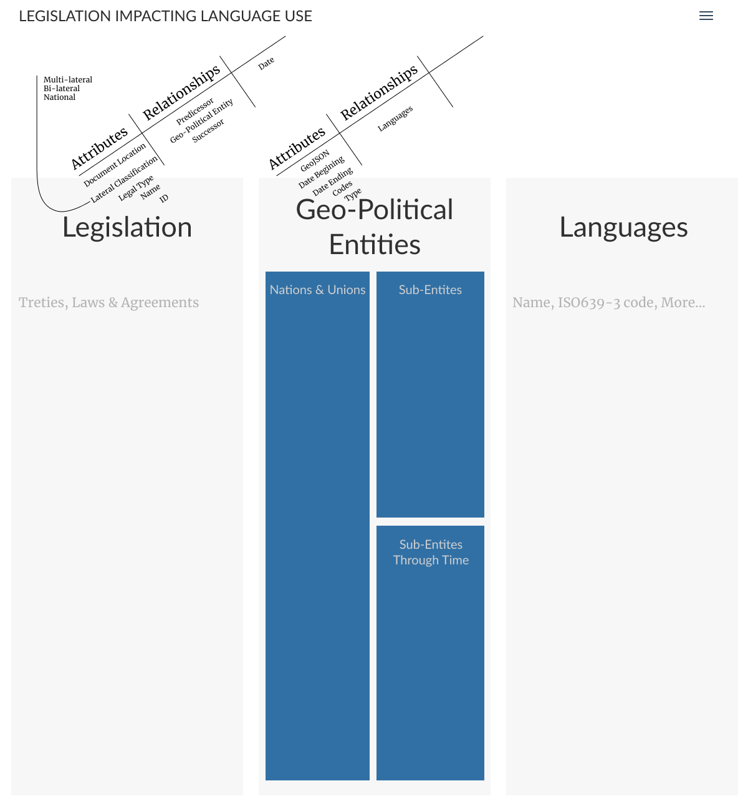

Legal concepts in linguistics, Language Documentation & Language Development
This project started out with a personal interest in the variation of copyright law as it is applied to language documentation materials from a global perspective (different locations and different citizens). I see the issue of copyright and jursidiction as important for global nomads who engage in linguistic tourism, and who believe in archiving data. Some simple investagation has shown that there is a lot more than ‘just copyright’ which impacts the multi-laterial relationship(s) between the law and legal policy, the vitality of languages, and the availability of linguistic or language based resources. Several collaborations and discussions have bennefitted from this research. Ultimatly the results of this research should be in a browsable database, not in some sort of publication. More boradly, and necessary but later encountered legal topics include, jusridiction and privacy rights.
Investigation and design is still ongoing, but a rough sketch is provided.

Hugh Paterson III
Collaborative Scholar
My research interests include typological patterns in articulatory phonetics; User Experience design in language tools; and graph theory applied to language and linguistic resource discovery.
Marginalia
Work-for-Hire and Open Access
Bibliography of select papers on 'ethics' and 'informed consent' in Linguistic research
Legal Frameworks in Language Research
Linguistic Service Policies
Publications
On Rights Management in Anthropological and Linguistic Sound Collections
Media Rights for Organizations
Talks
A Comparison of Thai and United States’ Copyright Laws as they Apply to Scholarly Video Resources